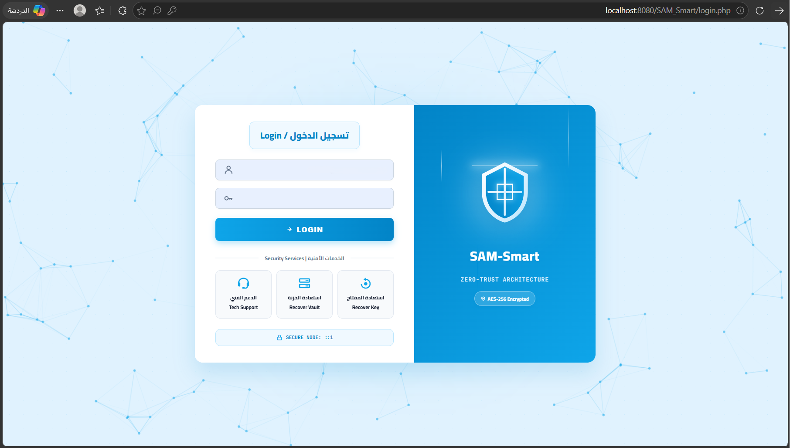

Sam-Smart
Zero-Knowledge Password Manager — Enterprise-Grade Cryptographic Security
Sam-Smart is a Zero-Knowledge Password Manager designed to provide enterprise-grade password protection while ensuring that sensitive user data remains inaccessible to the server itself. Utilizes AES-256-GCM encryption, Argon2id KDF, key wrapping, and multi-factor authentication.
- Zero-Knowledge Security Architecture
- AES-256-GCM Authenticated Encryption
- Master Key & Key Wrapping System
- Multi-Factor Authentication (2FA)
- Secure Password Vault Management
PHP
AES-256-GCM
Argon2id
Libsodium
2FA
Zero-Knowledge